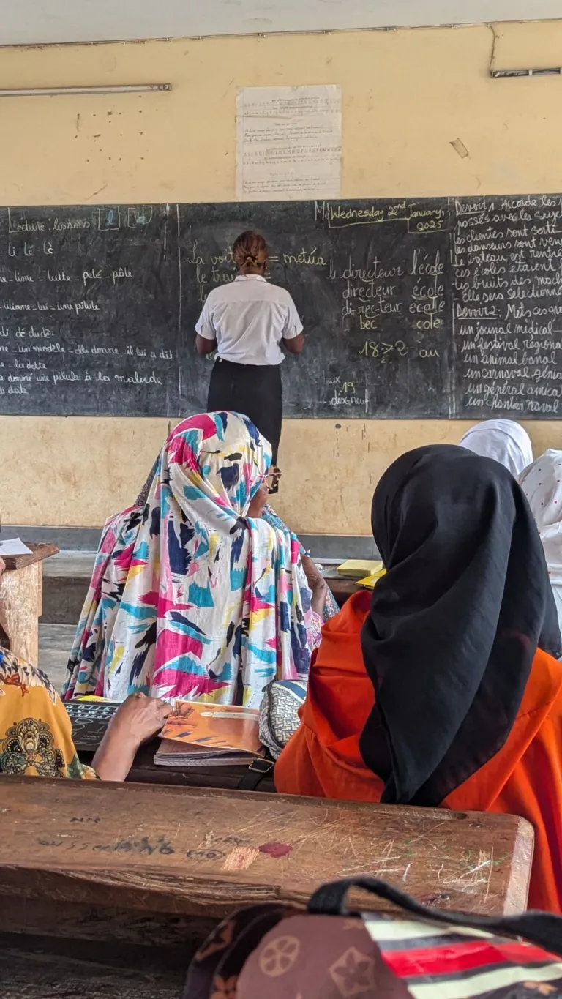

August 5, 2025 – Welcome! Bienvenue! Dalal ak diam!
SWEC believes every woman has the right to learn, lead, and thrive. Through education, digital literacy, leadership training, and vocational programs, women gain the confidence and skills to shape the future of the Sahel region and beyond.
This initiative continues SWEC’s mission to open doors of opportunity and independence — empowering women to be catalysts for community transformation.